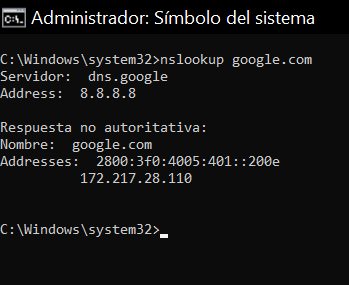
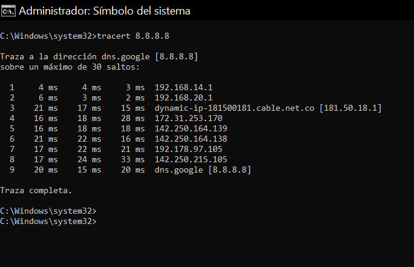
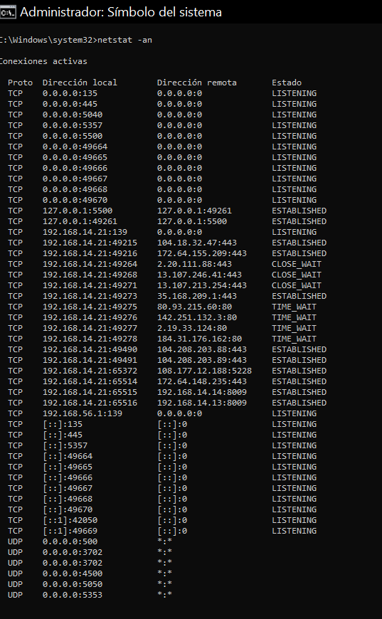
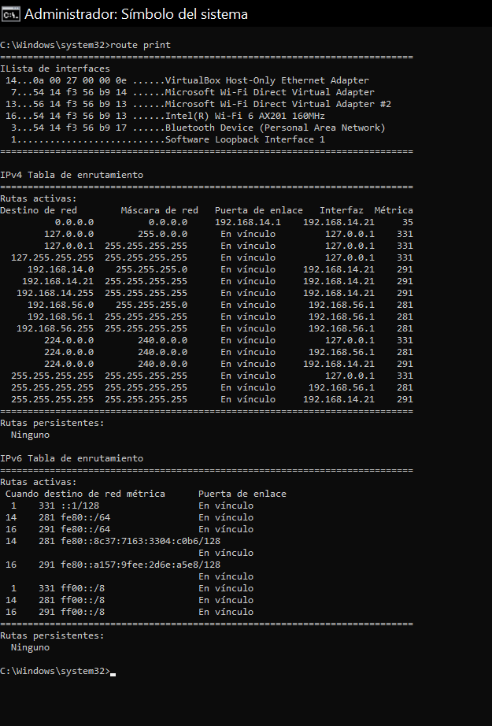
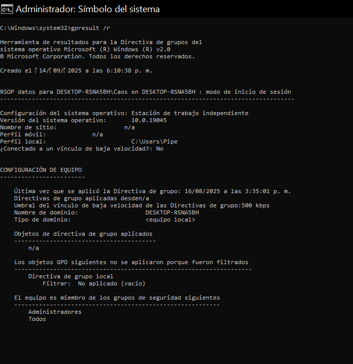
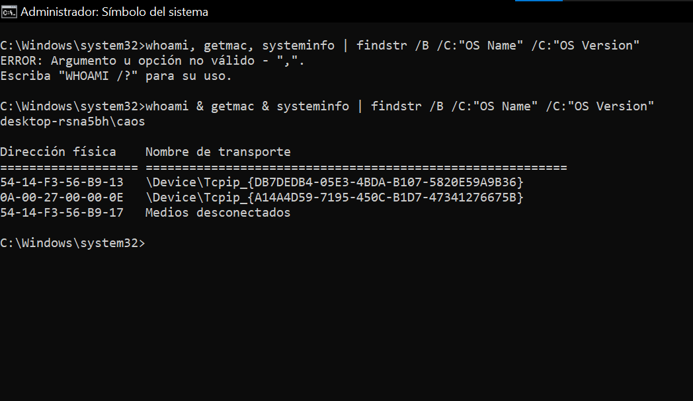
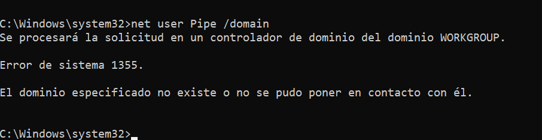
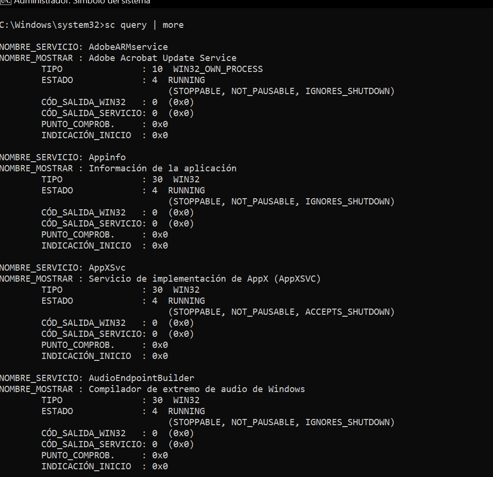

Fase de Ejecución
3.1 Formato Servicio Técnico
⚠️ Advertencia: Este documento aún falta por ser llenado completamente.
Formato Técnico
3.2 Evidencias Multimediales
En esta sección se presentarán las evidencias audiovisuales del proceso de ejecución. Actualmente el material aún está en edición y pendiente de ser subido a la página web.
⚠️ Importante: Las evidencias definitivas (videos y capturas) se añadirán una vez terminada la edición y validadas por el instructor.
3.3 Facturas / Soportes
Aquí se incluyen los formatos y soportes de préstamo de equipos. Actualmente los documentos están sin firmas y pendientes de validación.
Formato 1 - Préstamo de Equipos
⚠️ Documento pendiente de firmas.
Formato 2 - Prestamo de Equipos
⚠️ Documento pendiente de firmas.
3.4 Validación de Red y Servicios
Capturas de pantalla con comandos ejecutados desde servidor y cliente. (Estas imágenes están hechas en un equipo Windows 10 y no en un servidor; falta subir las capturas reales. Estas son de prueba).
01 - ipconfig /all (cliente)
Muestra toda la configuración de red del cliente: dirección IP, máscara, puerta de enlace y servidores DNS.
02 - ipconfig /all (servidor)
Confirma que el servidor tiene configurada su IP fija y el rol de DNS o puerta de enlace según lo planeado.
03 - ping al servidor desde cliente
Comprueba la conexión básica: si el cliente recibe respuestas del servidor significa que hay comunicación en la red.
04 - nslookup (comprobación DNS)
Verifica que el DNS responde correctamente y traduce nombres de dominio a direcciones IP.
05 - tracert (ruta)
Muestra el camino que siguen los paquetes hasta llegar al destino, útil para identificar saltos o problemas en la ruta.
06 - netstat -an (puertos/servicios)
Lista los puertos abiertos y las conexiones activas, confirmando que los servicios del servidor están en escucha.
07 - gpresult /r (aplicación de políticas)
Muestra las políticas de grupo que se aplicaron en el cliente al estar dentro del dominio.
08 - whoami / getmac / systeminfo (identidad y HW)

- whoami: identifica el usuario actual.
- getmac: muestra la dirección física de la tarjeta de red.
- systeminfo: da detalles del sistema como versión de Windows y hardware.
Nota: sustituir imágenes de Windows 10 por capturas reales del servidor el día 19/9/2025 en la carpeta capturas/.
3.5 Conclusión
En esta fase de ejecución pasamos de la planeación a la acción. Logramos instalar el servidor, crear el dominio y poner en marcha los servicios principales que necesitábamos, como el almacenamiento compartido y la resolución de nombres en la red.
También organizamos a los usuarios y equipos dentro de una misma estructura, aplicando reglas que aumentan la seguridad y el control sobre el acceso a la información. De esta forma, cada persona puede trabajar dentro de un entorno más ordenado y confiable.
Finalmente, comprobamos el funcionamiento de todo con pruebas sencillas como verificar la conexión entre equipos y el acceso a los archivos. Gracias a esto confirmamos que el sistema que construimos no solo es funcional, sino que también ofrece estabilidad y facilidad de uso.
Con este trabajo dejamos claro que, con organización y práctica, es posible convertir una red común en una herramienta segura, bien estructurada y lista para seguir creciendo en el futuro.